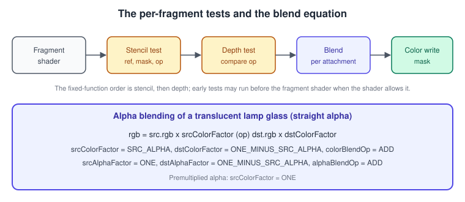
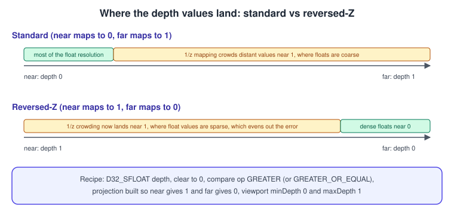
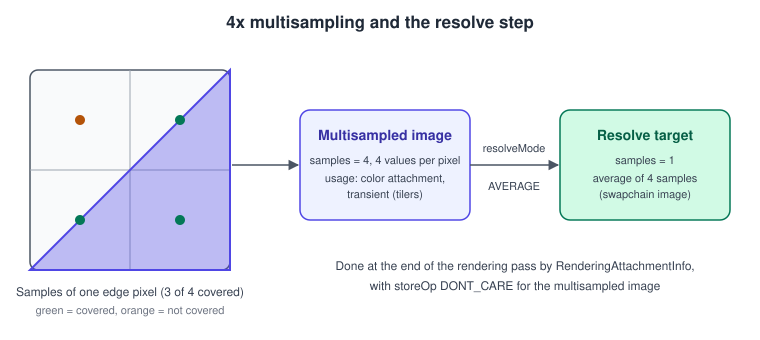

Depth, Stencil, Blending and MSAA in Vulkan
|
This content was generated with the assistance of AI and should be verified against the official documentation before being relied on in production. |
After the fragment shader runs, a fragment is still not a pixel. It has to survive the stencil test and the depth test, it is combined with what is already in the colour attachment by the blend equation, and when the image is multisampled the result is later resolved into a single colour per pixel. In Vulkan every one of those stages is configured by plain structures in the pipeline (or by dynamic state), and every image they touch has to be created, transitioned and cleared by you. This page covers the whole chain.
The facts were checked in November 2026. The version documented is Vulkan 1.4 (headers 1.4.3xx, LunarG SDK 1.4.363.0); Vulkan 1.3 is the minimum for the running
example. The relevant promotions are the separate depth and stencil layouts and depth-stencil resolve in 1.2, the extended dynamic state commands for depth and stencil
in 1.3 (so no pipeline rebuild for toggling the depth test) and nothing new for blending, whose extensions (dual-source is a feature, advanced blend is
VK_EXT_blend_operation_advanced) remain optional. The code uses dynamic rendering rather than render passes; the legacy model is explained once in
Dynamic Rendering.
This page belongs to the Vulkan Bookshelf running example (C++20, Vulkan-Hpp RAII, VMA, GLFW or SDL3, Slang shaders). It corresponds to the "depth and the shelf mesh" step: the shelf and the books need a depth buffer, the lamp glass needs blending, and the book edges need anti-aliasing. The general concepts are in The Rendering Pipeline and Transparency, Blending and Post-processing. The equivalent pages in other APIs are OpenGL blending, depth and stencil, OpenGL anti-aliasing and HDR and Metal render passes and load and store actions. The pipeline object that holds this state is in Graphics Pipeline Overview.
Where the tests happen

Conceptually the order is: fragment shader, stencil test, depth test, blending, colour write mask. The specification describes this order, but implementations
may run the depth and stencil tests earlier (early fragment tests) when the shader does not write depth, use discard or have other side effects; the result must look
as if the order above was kept. A fragment shader marked with layout(early_fragment_tests) in; (GLSL) or [earlydepthstencil] (HLSL and Slang) forces the early tests, which also
makes shader side effects such as storage writes depend on them.
Depth images
Formats and what the device guarantees
| Format | Bits | Guaranteed | Notes |
|---|---|---|---|
|
16 depth |
attachment and sampling |
Low precision, rarely a good idea except for small shadow maps. |
|
24 depth, 8 unused |
attachment, one of this or D32 is guaranteed |
Fixed point. Not every device has it. |
|
32 depth, floating point |
attachment and sampling |
The format to use with reversed-Z. Universally supported as an attachment. |
|
24 depth, 8 stencil |
one of this or D32_S8 is guaranteed |
Common on older desktop GPUs; fixed point depth. |
|
32 float depth, 8 stencil, padded |
one of this or D24_S8 is guaranteed |
Use for reversed-Z with stencil. Takes 64 bits per pixel on many GPUs. |
|
8 stencil only |
optional |
Check with |
The portable approach is to ask the device which of your candidates supports VK_FORMAT_FEATURE_DEPTH_STENCIL_ATTACHMENT_BIT with optimal tiling:
vk::Format pickDepthFormat(const vk::raii::PhysicalDevice& gpu, bool needStencil) {
const std::array<vk::Format, 3> candidates = needStencil
? std::array{ vk::Format::eD32SfloatS8Uint, vk::Format::eD24UnormS8Uint, vk::Format::eD16UnormS8Uint }
: std::array{ vk::Format::eD32Sfloat, vk::Format::eD32SfloatS8Uint, vk::Format::eD24UnormS8Uint };
for (vk::Format f : candidates) {
auto props = gpu.getFormatProperties(f);
if (props.optimalTilingFeatures & vk::FormatFeatureFlagBits::eDepthStencilAttachment)
return f;
}
throw std::runtime_error("no depth format");
}D16_UNORM_S8_UINT is listed as a last resort; it is not a required format, which is why the function checks every candidate like any other. When the stencil is not needed the list starts
with eD32Sfloat, the format reversed-Z wants.
Source: Vulkan Guide: Depth
Creating and transitioning the depth buffer
A depth image is an ordinary VkImage with VK_IMAGE_USAGE_DEPTH_STENCIL_ATTACHMENT_BIT, optimal tiling, device-local memory (here from VMA), and a view whose aspect mask is
DEPTH (and STENCIL for the combined formats; one view cannot be sampled with both aspects, so a view for sampling picks one). It is resized together with the swapchain, so keep its creation in a function you can call again.
struct DepthBuffer {
VkImage image = VK_NULL_HANDLE;
VmaAllocation allocation = nullptr;
vk::raii::ImageView view = nullptr;
vk::Format format{};
};
DepthBuffer createDepthBuffer(VmaAllocator vma, const vk::raii::Device& device, vk::Format format,
vk::Extent2D extent, vk::SampleCountFlagBits samples) {
vk::ImageCreateInfo info{};
info.setImageType(vk::ImageType::e2D)
.setFormat(format)
.setExtent({ extent.width, extent.height, 1 })
.setMipLevels(1).setArrayLayers(1)
.setSamples(samples)
.setTiling(vk::ImageTiling::eOptimal)
.setUsage(vk::ImageUsageFlagBits::eDepthStencilAttachment)
.setInitialLayout(vk::ImageLayout::eUndefined);
VmaAllocationCreateInfo alloc{};
alloc.usage = VMA_MEMORY_USAGE_AUTO;
alloc.flags = VMA_ALLOCATION_CREATE_DEDICATED_MEMORY_BIT; // render targets benefit from dedicated memory
DepthBuffer d;
d.format = format;
VkImageCreateInfo cinfo = info;
if (vmaCreateImage(vma, &cinfo, &alloc, &d.image, &d.allocation, nullptr) != VK_SUCCESS)
throw std::runtime_error("depth image");
vk::ImageAspectFlags aspect = vk::ImageAspectFlagBits::eDepth;
if (format == vk::Format::eD32SfloatS8Uint || format == vk::Format::eD24UnormS8Uint)
aspect |= vk::ImageAspectFlagBits::eStencil;
vk::ImageViewCreateInfo view{};
view.setImage(d.image).setViewType(vk::ImageViewType::e2D).setFormat(format)
.setSubresourceRange({ aspect, 0, 1, 0, 1 });
d.view = vk::raii::ImageView(device, view);
return d;
}Source: Vulkan Tutorial: Depth buffering
Before the first use, and with every use that follows a different layout, the depth image must be in the right layout. With synchronization2 the transition from undefined to the attachment layout at the start of the frame is a single barrier:
vk::ImageMemoryBarrier2 toDepth{};
toDepth.setSrcStageMask(vk::PipelineStageFlagBits2::eEarlyFragmentTests | vk::PipelineStageFlagBits2::eLateFragmentTests)
.setSrcAccessMask(vk::AccessFlagBits2::eDepthStencilAttachmentWrite)
.setDstStageMask(vk::PipelineStageFlagBits2::eEarlyFragmentTests | vk::PipelineStageFlagBits2::eLateFragmentTests)
.setDstAccessMask(vk::AccessFlagBits2::eDepthStencilAttachmentWrite | vk::AccessFlagBits2::eDepthStencilAttachmentRead)
.setOldLayout(vk::ImageLayout::eUndefined) // contents are cleared anyway
.setNewLayout(vk::ImageLayout::eDepthAttachmentOptimal)
.setImage(depth.image)
.setSubresourceRange({ vk::ImageAspectFlagBits::eDepth, 0, 1, 0, 1 });
vk::DependencyInfo dep{};
dep.setImageMemoryBarriers(toDepth);
cmd.pipelineBarrier2(dep);The attachment layouts for depth have been refined over time. VK_IMAGE_LAYOUT_DEPTH_STENCIL_ATTACHMENT_OPTIMAL is the original layout for both aspects. Vulkan 1.2 added the separate layouts
DEPTH_ATTACHMENT_OPTIMAL and STENCIL_ATTACHMENT_OPTIMAL (plus the read-only versions), which allow one aspect to be sampled while the other is written. Vulkan 1.3 added the generic
VK_IMAGE_LAYOUT_ATTACHMENT_OPTIMAL and READ_ONLY_OPTIMAL, which let you name the layout without caring about the aspect; synchronization2 recommends them. The transition rules themselves are in
Synchronization and Sync2.
The depth test
State and compare operations
vk::PipelineDepthStencilStateCreateInfo ds{};
ds.setDepthTestEnable(true)
.setDepthWriteEnable(true)
.setDepthCompareOp(vk::CompareOp::eLess) // keep the fragment if its depth is less than the stored one
.setDepthBoundsTestEnable(false)
.setStencilTestEnable(false);Source: Vulkan Guide: Depth
| Field | Meaning |
|---|---|
|
Compares the fragment’s depth with the stored one. When false, the fragment always passes and the depth buffer is not written. |
|
Whether a fragment that passes the test replaces the stored depth. Turn it off for transparent objects, which test but do not write. |
|
|
|
Discards fragments whose already stored depth is outside the range. Needs the |
Pipelines usually leave these dynamic. With Vulkan 1.3, vkCmdSetDepthTestEnable, vkCmdSetDepthWriteEnable, vkCmdSetDepthCompareOp, vkCmdSetDepthBoundsTestEnable,
vkCmdSetStencilTestEnable and vkCmdSetStencilOp change them per draw (VK_DYNAMIC_STATE_DEPTH_TEST_ENABLE and so on), so a
single pipeline serves opaque, transparent and sky draws. See Dynamic State, Shader Objects and Pipeline Libraries.
The depth range in Vulkan clip space is 0 to 1, not the -1 to 1 of OpenGL, and the viewport’s minDepth and maxDepth (both normally 0 and 1) map it to the stored values.
Despite their names minDepth can be larger than maxDepth, which flips the range without touching the projection matrix. Vulkan’s Y axis in normalised device coordinates also points down, so
projection matrices from OpenGL libraries need a flip (negative viewport height, which is core since Vulkan 1.1, or a negated Y scale); see
Coordinate Spaces and Transforms.
Reversed-Z
With a conventional projection and a hardware depth value \( d = \frac{ f }{ f - n } \left( 1 - \frac{ n }{ z } \right) \) for view-space distance \( z \) and near and far planes \( n \) and \( f \), almost all values for visible distances sit close to 1. A fixed-point buffer has the same step everywhere, so distant geometry gets very few distinct values and shows z-fighting. A floating-point buffer has more precision close to 0, so mapping the far plane to 0 (reversed-Z) puts the dense float values where the projection is coarse, and the two effects largely cancel. The result is nearly uniform relative precision over the entire range, and the far plane can be pushed to infinity.

The recipe has four parts that must all be present:
-
a floating-point depth format (
D32_SFLOATorD32_SFLOAT_S8_UINT); -
a depth clear value of 0 instead of 1;
-
a depth compare of
GREATERorGREATER_OR_EQUALinstead ofLESS; -
a projection that maps the near plane to 1 and the far plane to 0.
An infinite-far reversed-Z projection for a right-handed view space that looks down the negative Z axis and a Vulkan Y-down clip space is, in glm column-major terms:
glm::mat4 reversedZInfinitePerspective(float fovY, float aspect, float zNear) {
const float f = 1.0f / std::tan(fovY * 0.5f);
glm::mat4 m(0.0f);
m[0][0] = f / aspect;
m[1][1] = -f; // Vulkan clip space has Y pointing down
m[2][2] = 0.0f; // depth = zNear / distance
m[2][3] = -1.0f; // w = -z_view
m[3][2] = zNear;
return m;
}With this matrix the stored depth is \( d = \frac{ n }{ z } \), exactly 1 at the near plane and approaching 0 at infinity. Using \( d \) in the shader for linear depth reconstruction therefore needs the inverse, \( z = \frac{ n }{ d } \).
The pieces in the pipeline and in the render pass are:
ds.setDepthCompareOp(vk::CompareOp::eGreater);
vk::RenderingAttachmentInfo depthAttachment{};
depthAttachment.setImageView(*depth.view)
.setImageLayout(vk::ImageLayout::eDepthAttachmentOptimal)
.setLoadOp(vk::AttachmentLoadOp::eClear)
.setStoreOp(vk::AttachmentStoreOp::eDontCare) // not needed after the frame
.setClearValue(vk::ClearValue{ vk::ClearDepthStencilValue{ 0.0f, 0 } });Two cautions. Fixed-point formats (D16 and D24) gain nothing from reversed-Z, because their steps are uniform. And every depth-dependent effect, shadow maps included, must
be consistent: a shadow map that is rendered with reversed-Z needs GREATER in its pipeline and the matching comparison in the shadow sampler (compareOp GREATER_OR_EQUAL on a
VkSampler with compareEnable), see Textures, Samplers and Mipmaps.
Clamp, bias, bounds and unrestricted range
-
Depth clamp (
depthClampEnablein the rasterisation state, device featuredepthClamp) clamps the fragment depth to the viewport range instead of clipping the primitive against the near and far planes. Used for shadow maps so that casters behind the near plane still cast shadows.VK_EXT_depth_clip_controlselects the OpenGL-style -1 to 1 range, which helps layered translation implementations. -
Depth bias (
depthBiasEnable,depthBiasConstantFactor,depthBiasClamp,depthBiasSlopeFactor, dynamic withvkCmdSetDepthBias) offsets depth during rasterisation, mainly for shadow maps. The clamp value must be 0 unless thedepthBiasClampfeature is enabled. With reversed-Z, the sign of the bias flips. -
Depth bounds needs the
depthBoundsfeature and is not available on all mobile GPUs. -
Depth values outside 0 to 1 in a floating-point depth buffer require the
VK_EXT_depth_range_unrestrictedextension.
Source: Vulkan Guide: Depth
Depth in the Bookshelf frame
The shelf, books and floor are drawn with test and write enabled, GREATER compare and the reversed-Z projection. The lamp glass is drawn afterwards with test enabled and write disabled so it
is hidden by the books in front of it, but does not hide anything behind it. The clear to 0 happens once per frame as the depth attachment’s load operation.
// Opaque pass
cmd.setDepthTestEnable(true);
cmd.setDepthWriteEnable(true);
cmd.setDepthCompareOp(vk::CompareOp::eGreater);
drawShelfAndBooks(cmd);
// Translucent pass: test, no write
cmd.setDepthWriteEnable(false);
drawLampGlass(cmd);Source: Vulkan Guide: Depth
Stencil
The stencil buffer stores 8 bits per pixel next to the depth value. Each fragment is compared with the stored value and, depending on the outcome of the stencil and depth tests, the stored value is updated. It is a mask: it limits drawing to a region, counts overlaps or marks pixels for a later pass.
vk::StencilOpState markShelf{};
markShelf.setFailOp(vk::StencilOp::eKeep)
.setPassOp(vk::StencilOp::eReplace) // write the reference where the shelf is drawn
.setDepthFailOp(vk::StencilOp::eKeep)
.setCompareOp(vk::CompareOp::eAlways)
.setCompareMask(0xFF).setWriteMask(0xFF).setReference(1);
vk::StencilOpState drawOutline{};
drawOutline.setFailOp(vk::StencilOp::eKeep)
.setPassOp(vk::StencilOp::eKeep)
.setDepthFailOp(vk::StencilOp::eKeep)
.setCompareOp(vk::CompareOp::eNotEqual) // draw only where the shelf is not
.setCompareMask(0xFF).setWriteMask(0x00).setReference(1);
ds.setStencilTestEnable(true).setFront(markShelf).setBack(markShelf);| Field | Meaning |
|---|---|
|
What happens to the stored value when the stencil test fails. |
|
What happens when both stencil and depth pass. |
|
What happens when the stencil passes but the depth test fails. |
|
The same eight comparisons as depth. The comparison is |
|
Masks and the value compared against. They may be dynamic ( |
The operations are KEEP, ZERO, REPLACE, INCREMENT_AND_CLAMP, DECREMENT_AND_CLAMP, INVERT, INCREMENT_AND_WRAP and DECREMENT_AND_WRAP. The two classic uses in the Bookshelf are the selection outline of the picked book
(draw the book writing 1, then draw a slightly larger copy where the stencil is not 1) and masking a mirror or portal. In dynamic rendering the stencil attachment is a separate
pStencilAttachment of VkRenderingInfo, which can use the same image view as the depth attachment for combined formats; its layout, load and store operations are independent.
Common mistakes: forgetting that the stencil reference compares with compareMask applied, using the same state for both faces when the object is double-sided, leaving the stencil write mask non-zero in later passes, and
clearing only depth when the format is combined.
Blending
Blending combines the fragment shader’s output (the source) with the value already in the attachment (the destination). It is configured per colour attachment in a
VkPipelineColorBlendAttachmentState, collected in VkPipelineColorBlendStateCreateInfo.
vk::PipelineColorBlendAttachmentState alphaBlend{};
alphaBlend.setBlendEnable(true)
.setSrcColorBlendFactor(vk::BlendFactor::eSrcAlpha)
.setDstColorBlendFactor(vk::BlendFactor::eOneMinusSrcAlpha)
.setColorBlendOp(vk::BlendOp::eAdd)
.setSrcAlphaBlendFactor(vk::BlendFactor::eOne)
.setDstAlphaBlendFactor(vk::BlendFactor::eOneMinusSrcAlpha)
.setAlphaBlendOp(vk::BlendOp::eAdd)
.setColorWriteMask(vk::ColorComponentFlagBits::eR | vk::ColorComponentFlagBits::eG |
vk::ColorComponentFlagBits::eB | vk::ColorComponentFlagBits::eA);
vk::PipelineColorBlendStateCreateInfo blendState{};
blendState.setLogicOpEnable(false)
.setAttachments(alphaBlend)
.setBlendConstants({ 0.f, 0.f, 0.f, 0.f });Source: Vulkan specification: Blending
The blend equations are, for source colour \( C_s \), destination colour \( C_d \), their factors \( F_s \) and \( F_d \) and the operation \( \oplus \):
\[ C = C_s F_s \oplus C_d F_d \]
and the same, independently, for alpha with the alpha factors and operation. Because colour and alpha are separate, the lamp-glass setting above leaves the destination alpha as a valid coverage value.
| Group | Values | Notes |
|---|---|---|
Factors |
|
The constant factors read |
Operations |
|
|
Dual-source factors |
|
Need the |
Premultiplied alpha, where the colour has already been multiplied by the alpha in the shader or the texture, uses ONE for the source colour factor and ONE_MINUS_SRC_ALPHA for the
destination. It filters correctly in textures and composes without dark fringes, and is the better default for UI layers and particle sprites. See
Transparency, Blending and Post-processing for the maths and the sorting problem.
More blending controls
-
Colour write mask.
colorWriteMaskselects which channels are written (R, G, B, A). A mask of zero disables writes to the attachment, which together with a depth-only pass is how shadow maps and pre-passes avoid colour output. -
Independent blend. With the
independentBlendfeature each colour attachment has its own state; without it allVkPipelineColorBlendAttachmentStateentries must be identical, which matters for G-buffers whose targets want different blending. -
Logic operations.
logicOpEnablereplaces blending with a bitwise operation (XOR,AND,COPYand others,logicOpfeature) and applies to integer and normalised formats, not to floats. It disables blending for all attachments. -
Format support. Blending requires
VK_FORMAT_FEATURE_COLOR_ATTACHMENT_BLEND_BITfor the format. 32-bit float colour formats are the usual ones that may lack it; check before choosing an HDR format.R16G16B16A16_SFLOATis the common HDR target and is blendable on desktop GPUs. -
Advanced blend operations.
VK_EXT_blend_operation_advancedadds the Photoshop-like modes (multiply, screen, overlay and others) as blend operations; it is an extension, not core, and mostly present on some desktop and mobile vendors. Where it is missing, implement them in the shader by reading the destination, which in a render pass means an input attachment (VK_KHR_dynamic_rendering_local_read, core 1.4) or a copy. -
Dynamic blend state. Blend state is part of the pipeline unless made dynamic.
VK_EXT_extended_dynamic_state3makes blend enable, equation, write mask and sample counts dynamic (vkCmdSetColorBlendEnableEXT,vkCmdSetColorBlendEquationEXT,vkCmdSetColorWriteMaskEXT); it is an extension, so check its feature bits before using it.
Alpha to coverage and alpha testing
The fragment shader’s alpha can also control coverage in a multisampled image through alphaToCoverageEnable in the multisample state (below). It turns hard-edged cut-outs such as foliage
into anti-aliased edges and needs no sorting. alphaToOneEnable (feature alphaToOne) forces the alpha to 1 after coverage is computed. Fixed-function alpha testing no longer exists; use discard in the shader.
The Bookshelf lamp glass
The glass is drawn after all opaque geometry, sorted back to front, with depth test enabled and write disabled, and the straight-alpha blend above. If the sorting order is not critical, premultiplied alpha with ONE and ONE_MINUS_SRC_ALPHA
is both faster to compose and easier to filter. The fragment shader, in Slang:
[shader("fragment")]
float4 glassMain(VSOut input) : SV_Target0
{
float3 tint = float3(1.0, 0.85, 0.55); // warm lamp glass
float alpha = 0.35;
return float4(tint, alpha); // straight alpha; blend state does the rest
}Multisampling
Multisample anti-aliasing (MSAA) keeps several coverage samples per pixel. Geometry is rasterised once per primitive, the fragment shader normally runs once per pixel (per primitive covering it) and the result is written to every covered sample. Edges therefore get smooth intermediate values, while the interior costs the same as without MSAA apart from the memory and bandwidth for the samples.

Choosing a sample count
VkSampleCountFlagBits offers 1, 2, 4, 8, 16, 32 and 64 samples. The device limits framebufferColorSampleCounts, framebufferDepthSampleCounts, framebufferStencilSampleCounts and
framebufferNoAttachmentsSampleCounts list what is supported, and the core specification requires 1 and 4 samples for colour attachments. Mobile GPUs commonly offer 4 (a good fit for tile memory); desktop GPUs offer 8 and often more. All attachments used together in one rendering must have the same sample count (extensions such as
VK_AMD_mixed_attachment_samples and VK_NV_framebuffer_mixed_samples relax this on some hardware).
vk::SampleCountFlagBits maxUsableSamples(const vk::raii::PhysicalDevice& gpu) {
auto limits = gpu.getProperties().limits;
auto counts = limits.framebufferColorSampleCounts & limits.framebufferDepthSampleCounts;
for (auto c : { vk::SampleCountFlagBits::e64, vk::SampleCountFlagBits::e32, vk::SampleCountFlagBits::e16,
vk::SampleCountFlagBits::e8, vk::SampleCountFlagBits::e4, vk::SampleCountFlagBits::e2 })
if (counts & c) return c;
return vk::SampleCountFlagBits::e1;
}Source: Vulkan Tutorial: Multisampling
The images and the pipeline
With MSAA you have two colour images: the multisampled one you render into, and a single-sample one that receives the resolved result (normally the swapchain image). The depth image must have the same sample count as the multisampled colour image.
// Multisampled colour target. TRANSIENT_ATTACHMENT lets tilers keep it in tile memory without ever allocating backing storage.
vk::ImageCreateInfo msaaInfo{};
msaaInfo.setImageType(vk::ImageType::e2D)
.setFormat(swapchainFormat)
.setExtent({ extent.width, extent.height, 1 })
.setMipLevels(1).setArrayLayers(1)
.setSamples(samples)
.setTiling(vk::ImageTiling::eOptimal)
.setUsage(vk::ImageUsageFlagBits::eColorAttachment | vk::ImageUsageFlagBits::eTransientAttachment)
.setInitialLayout(vk::ImageLayout::eUndefined);
// Allocate with VMA_MEMORY_USAGE_AUTO and VMA_ALLOCATION_CREATE_DEDICATED_MEMORY_BIT, preferring VK_MEMORY_PROPERTY_LAZILY_ALLOCATED_BIT
// (VMA exposes this as VMA_MEMORY_USAGE_GPU_LAZILY_ALLOCATED where the platform has such a memory type).
vk::PipelineMultisampleStateCreateInfo ms{};
ms.setRasterizationSamples(samples)
.setSampleShadingEnable(true) // optional: shade at sample frequency, needs the sampleRateShading feature
.setMinSampleShading(0.2f)
.setAlphaToCoverageEnable(false);Source: Vulkan Tutorial: Multisampling
The pipeline’s rasterizationSamples must match the sample count of the attachments it draws to. sampleShadingEnable with minSampleShading between 0 and 1 runs the fragment shader at least that fraction of the samples
per pixel, which fixes aliasing inside textures and specular highlights at the cost of performance; without it only edges are anti-aliased. It requires the sampleRateShading feature. A transient attachment that
is lazily allocated saves memory on tile-based GPUs when its contents are never stored; this is the reason for storeOp = DONT_CARE on the multisampled colour below.
Resolving in dynamic rendering
Dynamic rendering resolves inside the rendering scope. You give the multisampled attachment a resolveMode, a resolveImageView and its layout, and the result is written when the rendering ends.
vk::RenderingAttachmentInfo color{};
color.setImageView(*msaaColorView)
.setImageLayout(vk::ImageLayout::eColorAttachmentOptimal)
.setResolveMode(vk::ResolveModeFlagBits::eAverage)
.setResolveImageView(swapchainImageView)
.setResolveImageLayout(vk::ImageLayout::eColorAttachmentOptimal)
.setLoadOp(vk::AttachmentLoadOp::eClear)
.setStoreOp(vk::AttachmentStoreOp::eDontCare) // the multisampled data is not needed afterwards
.setClearValue(vk::ClearValue{ vk::ClearColorValue{ std::array{ 0.05f, 0.05f, 0.08f, 1.0f } } });
vk::RenderingAttachmentInfo depthAtt{};
depthAtt.setImageView(*depth.view)
.setImageLayout(vk::ImageLayout::eDepthAttachmentOptimal)
.setLoadOp(vk::AttachmentLoadOp::eClear)
.setStoreOp(vk::AttachmentStoreOp::eDontCare)
.setClearValue(vk::ClearValue{ vk::ClearDepthStencilValue{ 0.0f, 0 } });
vk::RenderingInfo renderingInfo{};
renderingInfo.setRenderArea({ {0, 0}, extent })
.setLayerCount(1)
.setColorAttachments(color)
.setPDepthAttachment(&depthAtt);
cmd.beginRendering(renderingInfo);
// ... draws ...
cmd.endRendering();For colour, AVERAGE is the standard mode for floating-point and normalised formats; integer formats use SAMPLE_ZERO, because averaging integer ids is meaningless. For depth and stencil, Vulkan 1.2 promoted
VK_KHR_depth_stencil_resolve: the supported modes are reported in VkPhysicalDeviceDepthStencilResolveProperties (supportedDepthResolveModes and supportedStencilResolveModes), where SAMPLE_ZERO is always
available and AVERAGE, MIN and MAX are optional. Resolving depth is only necessary when a later pass reads it; otherwise store nothing.
Common mistakes: transitioning only the multisampled image and forgetting the resolve target’s layout and access, forgetting the final layout of the swapchain image for presentation (PRESENT_SRC_KHR), creating the depth image with
one sample while colour has four, and calling vkCmdBlitImage between images of different sample counts (blit does not support multisampled images; use a resolve or vkCmdResolveImage, or the resolve in the rendering info).
Alternatives and performance notes
-
On tile-based GPUs (most mobile ones and Apple silicon through the portability layers), 4x MSAA with a transient multisampled image and an in-pass resolve is cheap: the samples never leave the tile. On immediate-mode desktop GPUs, MSAA costs bandwidth proportional to the sample count and gets expensive in deferred renderers.
-
Deferred pipelines and post-processing effects are often combined with temporal anti-aliasing or the FXAA-like filters instead; see Transparency, Blending and Post-processing.
-
VK_EXT_multisampled_render_to_single_sampledlets a single-sampled image behave as multisampled for the duration of a rendering without creating the multisampled image yourself. It is an extension, mostly relevant on tilers, so check it with the feature query. -
Enable
sampleRateShadingselectively. Sample-frequency shading can multiply fragment cost by the sample count for the shaded fraction. -
Use
alphaToCoveragefor foliage-like cut-outs rather than blending, and keep MSAA off the UI pass, which is typically rendered to a single-sample target afterwards.
Where the books are outdated
| Topic | Older guide (VPG chapter 10, VCB chapter 8) | Current practice |
|---|---|---|
Where attachments are configured |
|
|
Depth layouts |
Only |
Separate depth and stencil layouts (1.2) and generic |
Depth precision |
Conventional mapping with |
Reversed-Z with |
Depth and stencil resolve |
Not in the 1.0 specification. |
Core since 1.2 with |
Changing depth state |
A pipeline per combination. |
Dynamic state for depth, stencil and cull (core 1.3); blend state through |
Transient multisampled images |
Mentioned for render passes. |
Still valid and important on tilers; |
Barriers around attachments |
|
Synchronization2 with explicit fragment-test stages; see Synchronization and Sync2. |
Checklist
-
A depth format chosen with
getFormatProperties, never hard-coded; reversed-Z uses a float format. -
Clear value, compare op and projection agree (all three reversed, or none).
-
The depth image sample count equals the colour sample count and the pipeline’s
rasterizationSamples. -
Transparent draws test depth but do not write it, after the opaque draws.
-
Blend factors suit straight or premultiplied alpha consistently across the textures and shaders.
-
Blending is enabled only on formats that report the blend feature.
-
The resolve target is in the right layout, and the multisampled image is not stored when nobody reads it.